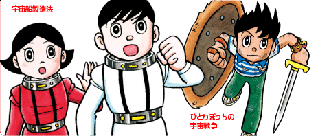
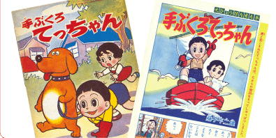
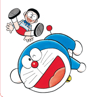
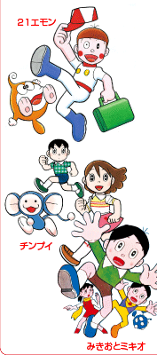
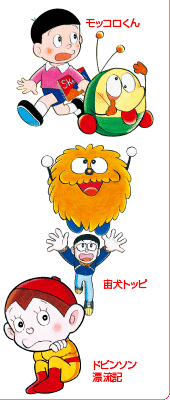
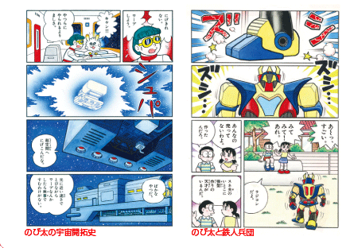

「少年SF短編」シリーズも、初の“カラー完全版”で！
はじめて単行本化されるまぼろしの名作「てぶくろてっちゃん」！
「ドラえもん」「オバケのＱ太郎」は引き続き刊行！
名作タイトル、人気キャラクターがどっさり登場！ その数、第１期の倍以上！
「大長編ドラえもん」 初の“カラー完全版”で登場！
©藤子プロ・小学館

「少年SF短編」とは、“SF短編”シリーズのうち、少年向けに発表された作品群。これらも冒頭がカラーだった部分は、すべてカラーで印刷します。
ページTOPへ

藤子･Ｆ･不二雄自身も「自らの節目になった」重要な作品としながら、一度も単行本化されていなかった、まさに幻の名作「てぶくろてっちゃん」が、ついに刊行されます。
ページTOPへ

「ドラえもん」は大好評を博した“学年繰り上がり方式”を継続していきます。第２期は＜1969年度生まれ＞の学年の「ドラえもん」からスタート！
「オバケのＱ太郎」は、『少年サンデー』と同時期に、学年誌に掲載された作品を刊行！
ページTOPへ

「ドラえもん」
「オバケのＱ太郎」
「大長編ドラえもん」
「２１エモン」
「チンプイ」
「みきおとミキオ」
「バウバウ大臣」
「てぶくろてっちゃん」
「少年ＳＦ短編」
「パジャママン」
「４じげんぼうＰポコ」
「モッコロくん」
「宙ポコ」
「宙犬トッピ」
「ドビンソン漂流記」ほか
※「オバケのQ太郎」は、藤子不二雄Ａ氏との共著です。
※刊行タイトルは予定につき、一部変更になる場合があります。

ページTOPへ

「大長編ドラえもん」は、連載当時、冒頭部分がカラー原稿で描かれている回がありました。いままでモノクロでしか刊行されていなかったそれらの原稿を、すべてカラーで印刷します。